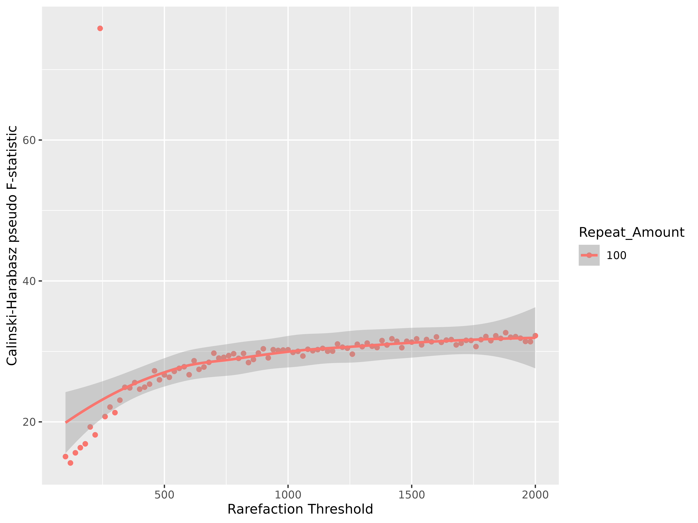
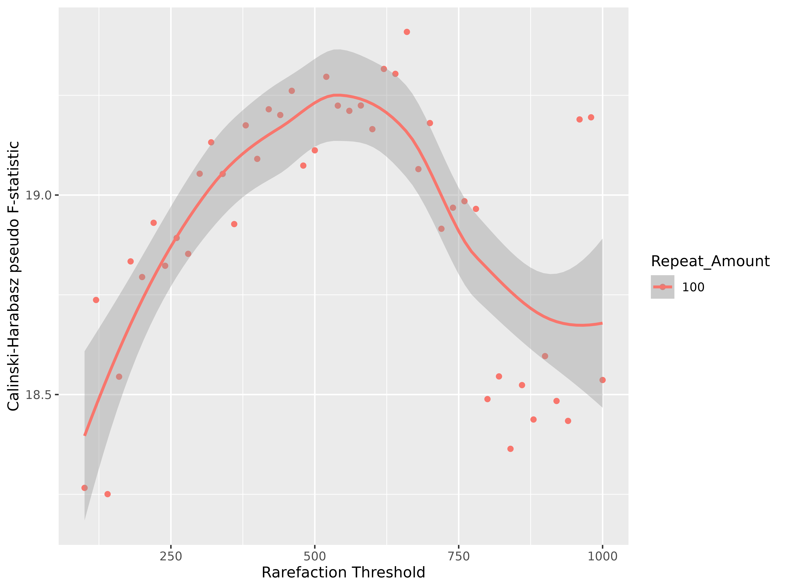
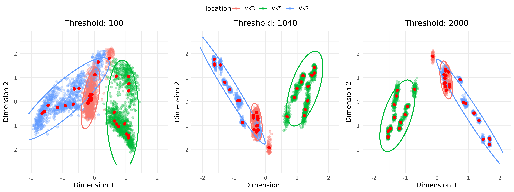

Sibyl
Lorenzo Assentato
2025-12-11
Sibyl.RmdIntroduction
Sibyl is a package designed to test different rarefaction thresholds, when accounting for diverse library size (sequencing depth) in microbial abundance data.
When performing Principal Component Analysis (PCA), or other types of ordinations, it is necessary to choose a rarefaction threshold which does not impact the structure of the data during exploratory analysis.
The current package builds on an implementation of rarefaction which corresponds to multiple iterations of random sub-sampling. The result of a all the repetitions for a single sample are then used to calculate consensus coordinates for the sample. The functions in the package are build to accommodate different computational requirements, therefore the number of times sub-sampling is repeated can be set by the user.
Keep into account that increasing repeats number requires more computational power, in particular the main limiting factor is available memory to store a high number of ordination results.
There are two key parameters to keep into account while exploring a dataset with Sibyl:
- Rarefaction threshold: The sequencing depth threshold at which we decide to sub-sample our data.
- Repetition number: this is the number of times we want to repeat the sub-sampling.
Data information and source
The data contained in the package and used for illustration comes from Illumina MiSeq paired-end sequencing of regions V3-V4 of the 16S genes. The samples used in the study are adult mosquitoes from Burkina Faso, a more thorough description is in the published paper from Buck et al. (2016). The other data provided in the package is a collection of mosquito larvae from Ethiopia from Assentato et al. (2025), which provides a wider array of sequence depths, from low to high.
Working example
Sample completeness and sequencing depth
After loading the package the first step is to perform the calculation of accumulation (rarefaction) curves. This allows a rough understanding of how the sequencing depth relates to the completeness of each sample.
The function performs the calculation of rarefaction curves with the selected step size (a coarser step size require less computational power).
The Abundance Coverage Estimator value (ACE) is calculated for each sample as a measure of sample richness, and a generic accumulation curve is fitted to the data, with its asymptote being the ACE value. This functionality is particularly useful to give a visual impression of where the curve “break-point” is, or where the curve is approaching the plateau, fixed as 75% of the ACE value.
Since in reality these samples never reach their ACE value, which is always way over their actual sequencing depth (due to it being an estimation), the “plateau” 75% threshold is to be considered just a guidance estimate. It is not an empiric measure, therefore should not be treated as such.
accumulation_result <- accumulation_test(adults, step = 5)The resulting list contains:
- accumulation_plot: Aggregated plot for all samples with fitted accumulation curves.
- threshold_density: 75% thresholds density plot.
- individual_plots: Individual rarefaction plots with fitted accumulation curves.
Let’s take a look at the first 4 individual accumulation plots:
ggpubr_installed <- requireNamespace("ggpubr", quietly = TRUE)
if (!ggpubr_installed) {
message("Install 'ggpubr' to reproduce the vignette examples: install.packages('ggpubr')")
}
ggpubr::ggarrange(plotlist = accumulation_result$individual_plots[1:4], nrow=2, ncol=2)The density plot is a visual summary of the range at which most of the 75% thresholds calculated on the dataset fell.
accumulation_result$threshold_densityTogether, the results produced from this test can be used to choose an appropriate threshold range to perform the rest of the analysis.
Ideally, while prioritizing sample completeness, we want to make sure to select a threshold which allows us to keep most of our samples. In this particular case, to not render the dataset unbalanced.
Running main testing function
We proceed by running now the main testing function in the Sibyl package.
Since most of our 75% thresholds, according to the accumulation analysis, falls in the range between 1000-2000 (and since we are interested in seeing how low we can push this specific dataset), we select a range going from 100 to 2000.
Optionally, the repeat number can be a vector of different values. In that case the testing over different thresholds takes place at different repeat amounts, and it is possible to directly explore how the amount of subsampling events affects rarefaction and sample position in the ordination.
The choice of a range to test your data on should always be made considering the compromise between sample completeness (how well described is the sample microbial community according to the previous analysis), and how many samples are excluded or included when changing rarefaction threshold.
threshold_test_result <- test_threshold(adults, repeats = 100, t_min = 100, t_max = 2000, t_step = 20, group = "location", cores = 4)This function produces a series of results which can be visualized immediately or through auxiliary functions.
Those are:
- index_plot: That is probably the most important result. It shows how the Calinski-Harabasz index (CH) changes when increasing rarefaction threshold. The index is a ratio of the between-cluster separation (BCSS) to the within-cluster dispersion (WCSS), normalized by their number of degrees of freedom. A higher index means that the the between cluster separation is getting bigger and clusters are less spread out. The index is calculated based on the consensus points obtained from the sub-sampling attempts. The clusters are defined as the “group” variable used in the function “threshold_test_result”.
We are looking for a point in which the CH index is close to a plateau, which indicates that a higher sequencing effort (a higher rarefaction threshold) does not affect the ordination.
threshold_test_result$index_plot
In this other example, we can see what happens when there are samples in the dataset which do not have enough reads to meet the rarefaction threshold.
We get a sudden drop in the value of the CH index which indicates that samples have been removed, and there has been either a decrease of BCSS or an increase of WCSS (or both). However, this is a good indication of when samples are getting removed, and if it is important to keep all samples in the analysis, we might want to operate a choice that maximize the CH index.
This has been performed on a different dataset, accessible (when package is not loaded) with:
data(larvae)
- ordination_plots: This is a list containing all the individual ordinations for the selected repetition number across the whole threshold range to test.
Let’s take a look at some of them (lowest threshold, median and highest):
# Isolate the repeat number we need:
ordination_plots <- threshold_test_result$ordination_plots$`repeat_number 100`It is possible to see how the ordination changes according to the rarefaction threshold, and how the highest value is not necessarily making a big difference when compared to the median. The biggest impact lies in the initial increase of the threshold, but after a critical point the sample clouds are stable and thus not really affected by the stochastic sub-sampling procedure.
Thus, this also means that going under a specific rarefaction value might impact our ordination because of an artificial increase of point dispersal, which in turn introduces a bias creating an artificial overlap of two groups which are normally separated.
# Print first, middle and last plot:
n <- length(ordination_plots)
# Get indices
indices <- unique(c(1, ceiling(n / 2), n))
selected_plots <- lapply(indices, function(i) ordination_plots[[i]])
ggpubr_installed <- requireNamespace("ggpubr", quietly = TRUE)
if (!ggpubr_installed) {
message("Install 'ggpubr' to reproduce the vignette examples: install.packages('ggpubr')")
}
ggpubr::ggarrange(plotlist = selected_plots, ncol = 3, common.legend = TRUE)
- avg_distances: This is a list of dataframes which contains the values of average pairwise distances (APD) for each cloud of points (sub-sampling ordination results) generated from a single sample.
A decreasing trend means that the average pair-wise distance of the cloud gets smaller.
Measuring APD is especially valuable to give further insight in when we are reach a point of diminishing returns on the ordination structure. When increasing the threshold does not increase APD, it means that a sample position is less affected by repeating the sub-sampling.
APD_plots <- threshold_test_result$avg_distances$repeat_number_100
avg_pairwise_dist_plot(APD_plots)
Consideration on the results
Overall in this worked example, data suggests that a threshold as low as 750 does not impact significantly the data structure in the ordination (according to CH index), and does not affect the single sample position when repeating sub-sampling (looking at the APD plots). Despite that, when considering the accumulation curve we can also consider that 750 reads is most likely not enough to describe accurately our samples.
However, the package allowed us to explore the effect of different rarefaction thresholds, and to confirm that lowering a threshold to include more samples does not necessarily affect our exploratory analysis, which is still valid for relatively low threshold numbers.
References
Buck, M., Nilsson, L., Brunius, C. et al. Bacterial associations reveal spatial population dynamics in Anopheles gambiae mosquitoes. Sci Rep 6, 22806 (2016).
Assentato, L., Nilsson, L., Brunius, C. et al. The type of environment has a greater impact on the larval microbiota of Anopheles arabiensis than on the microbiota of their breeding water, FEMS Microbiology Ecology, Volume 101, Issue 1, (2025).